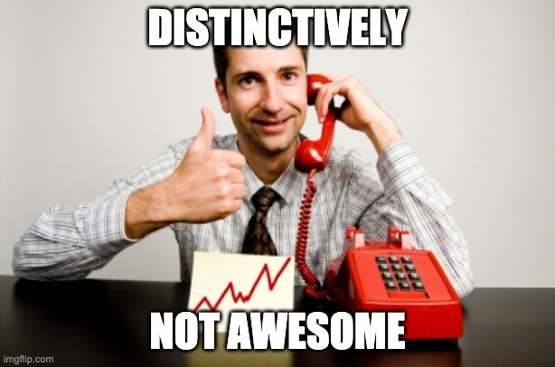
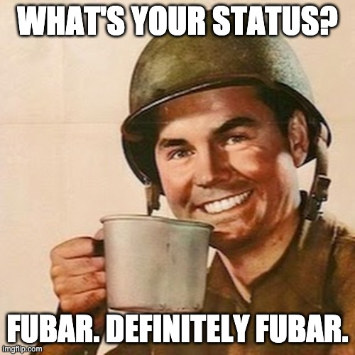
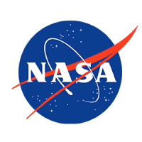
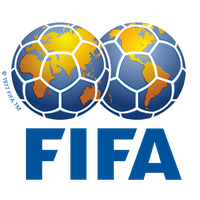
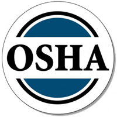

H.U.M.A.N. (How to Use More Acronyms Now!)
Cat got your tongue? Or perhaps it’s a mouthful of words you’re tired of having to repeat over and over that’s turned you into a babbling, stuttering mess.
I know how it goes. You’re cold calling, seeking new business, but you’ve made the mistake of coming up with a long and convoluted name for your company. It sounded cool at the time, sure, but now you love it just about as much as slamming your head in a car door. Maybe you’d rather do that over and over again to put you out of your word-salad misery.
But what if there was a better way? An easier way that was cool as a glass of water? That made your sales pitch sound as cool as James Dean looks in a hot pair of Ray-Bans?
Acrony.Me’s patented shortening method is just that solution.
How Does it Work?
The brilliance of Acrony.Me’s method comes down to its three-step method:
- Take the first letter of each word in the phrase that’s got you all bunged up
- Compress them together into a single chain of letters
- Pronounce them as a word
Wow, So That’s Really It?
That really is it!
Those three steps are the key to our patented “morphological process” and are backed up by pure science.
Science?
That’s right. The social science of linguistics. Specifically, acronymy.
Tell Me More!
Ok!
Acronymy is a shortening method that is closely related to initialism (or alphabetism) and is a kind of abbreviation. Sometimes, people will use the term “acronym” to mean all forms of abbreviation rather than in the strict, or “proper” sense as we use here at Acrony.Me (Fandrych, 19).
Abbreviations go back “several millennia . . . even occurring in Sumerian.” One well-known example can be seen in the ancient Roman “Senatus populesque Romanius” and its initialism, SPQR (Cannon, 99). Of course, the Roman SPQR isn’t an acronym, as it would be quite difficult to say as a word.
Good examples of modern acronyms include public companies and organizations like NASA (National Aeronautics and Space Agency), or OSHA (Occupational Safety and Health Association). Another well-known brand, that many may not be aware is an acronym, is GEICO (Government Employees Insurance Company).
While acronyms like these seem to be everywhere these days, it hasn’t always been the case. These sorts of abbreviations may have been in use for a long time, but it wasn’t until 1943 that the term acronym was even defined (Cannon, 107). This was a result of the boom in initialism and acronym usage during World War Two, but the first acronym in the English language is said to be SCOTUS (Supreme Court of the United States), created for ease of transmission in telegraphs starting in 1895 (Zimmer).
Wait, World War Two? Won’t I Sound Old Fashioned?
On the contrary, acronyms are everywhere these days. It seems like everyone is using them! We’ve seen that some of the biggest companies and world organizations use them. In fact, the most successful of those companies are typically found on the National Association of Securities Dealers Automated Quotations system, or NASDAQ, one of the world’s largest stock exchanges. Don’t Believe Us? Take a Look at Our Top Customers:- 
- 
- 
As you can see, using Acrony.Me for your business acronym needs puts you in good company. Don’t wait a moment longer.